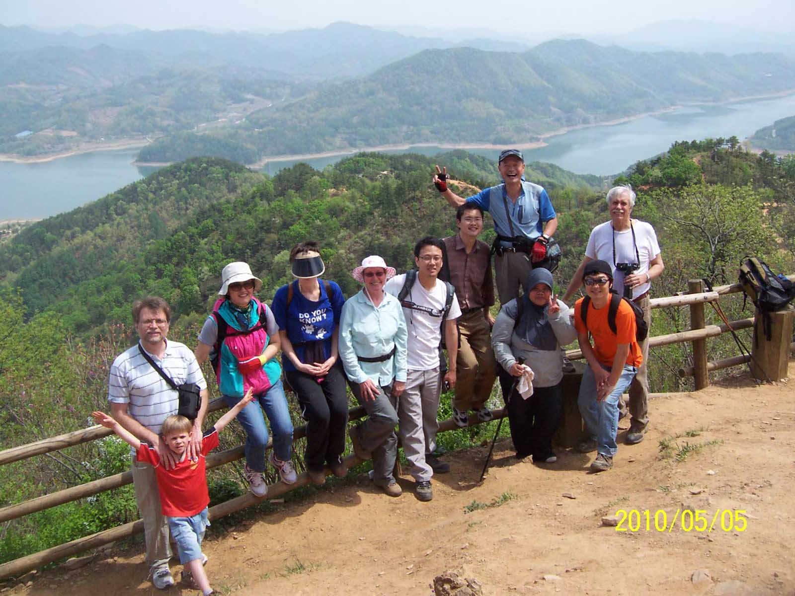
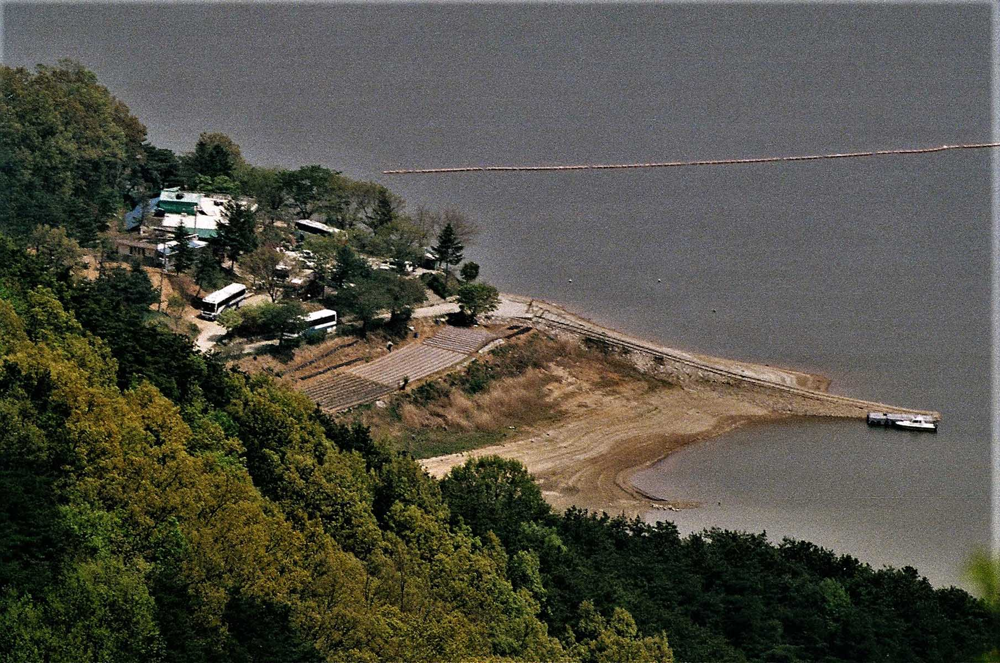
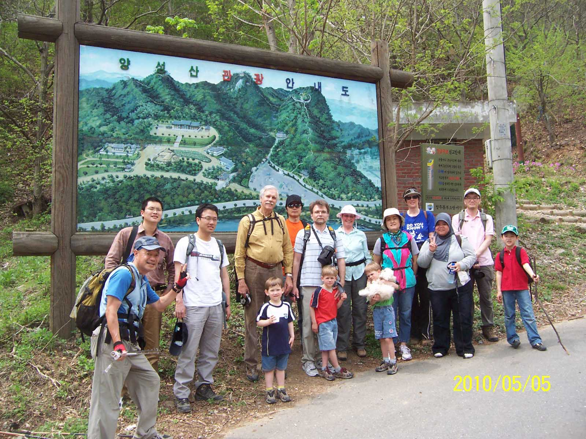

Incised Meander

From a geological perspective this is an interesting hike as once you reach the summit of the mountain you have an ideal
opportunity to view the reservoir for Daejeon (대청호) from a bird-eye view. This is an example of an incised meander.
Originally the land of Korea was flat and the streams flowed over it with the characteristic “S” shaped channels like those
found on the Mississippi River in the central southern area of the US. Then when the land started to rise slowly about 70
million years ago, the river maintained its original “S” shaped channel. This peak is one of the best vantage points for
viewing this feature of the Geum (금강) River. This is a classic location for a dam as the deep incised channel can store a
great deal of water. This lake was one of the many built during the former President Park Chun Hee’s (박정희) period with the
aim of modernizing Korea. One of the major problems in Korea is that it is only during the monsoon season of June, July and
August that there is abundant rainfall in Korea. In fact this is the time of year when ninety percent of the rain falls.
Therefore Korea used to have major problems with producing enough to feed the population.
Dams everywhere

The Park Chun Hee (박정희) administration decided to solve this problem by building dams both large and small to alleviate this
problem. When you travel around Korea you will see the many lakes that were made during this SaeMaEul movement (사마을 운동 … a
political initiative launched to modernize the rural South Korean economy). I am not a great supporter of damming rivers but
in this case, it did solve a major problem and helped lead to the prosperity of the country which was a large contributing
factor in allowing Korea to rise from being one of Asia’s poorest countries after the Korean war in the 1950’s to one of the
richest. Today Korea’s economy ranks 11th largest in the world and 4th largest in Asia. Being able to feed its increasing
population was essential in achieving this spectacular feat considering the mountainous terrain and relatively little land available for cultivation.
Fortress on the summit

This is not a difficult hike, the elevation reaches only 300.6 meters. The trail is obvious and there are many signs
indicating the direction the peak. The map included in the photo section of this write up shows the trail that we followed
on this hike on our 2010 hike. It is a popular mountain and in the fall there are many hikers so start early on your hike
during that season. Additionally for those brave enough to face the extreme heat of the summer, the trail to the summit is
mainly a shady tree forest path. Also noteworthy is the remains of a fortress called, 청주양성산성 built during the 3 kingdom
period in 474 by the Shilla (신라) Dynasty. To translate that name for you, 청주 is the name of the closest city, 양성산 the name
of the mountain and 성 meaning fortress. The fortress at one time surrounded the summit at a height of 292 meters. It is said
the famous monk 승려 화은 ( Monk Hwa Eun) lived here. At the base of the mountain is also a youth cultural center called the 청소년
수련원.
Guests on hike

We were honored this hike as well to have Juli Sherer and Alan England along with George Suzuki. Juli is one of the founders
of the Daejeon Hikers and Alan England did an excellent job of leading the group after Juli returned to the US. George
Suzuki is also a great supporter of the group and has led many hikes. He is an avid hiker and has hiked Mt Fuji over 20
times. Although he has since moved back to Japan for his retirement, he returns a few times a year to Korea at which times
we always have a special hike for him to one of his favorite hiking places. During these hikes we have a large turnout of
hikers as many of his past students come on the hike to be with him again and chat about shared hiking experiences. Often
after these special hikes we have an enjoyable meal at a restaurant near to the mountain we had been hiking that day making
the day all the more special. The Daejeon hikers group repeated this hike in March of 2018 before any leaves had appeared on
the trees or plants had returned to life.